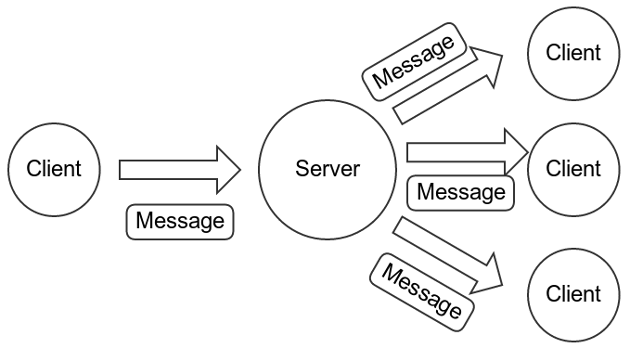
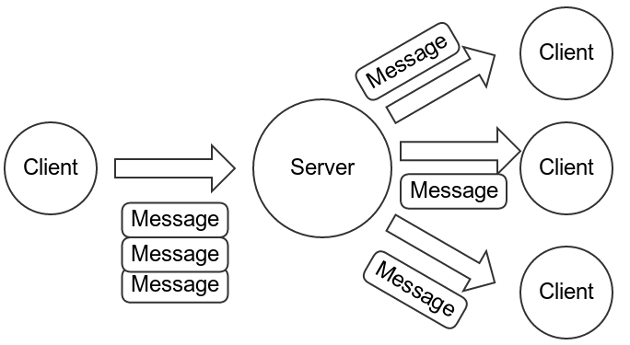
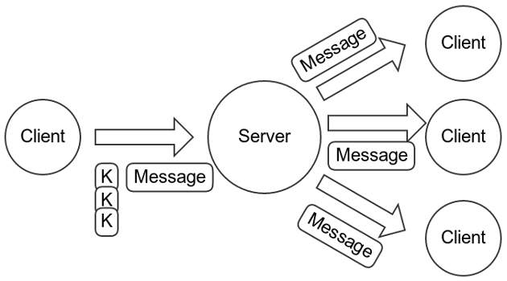
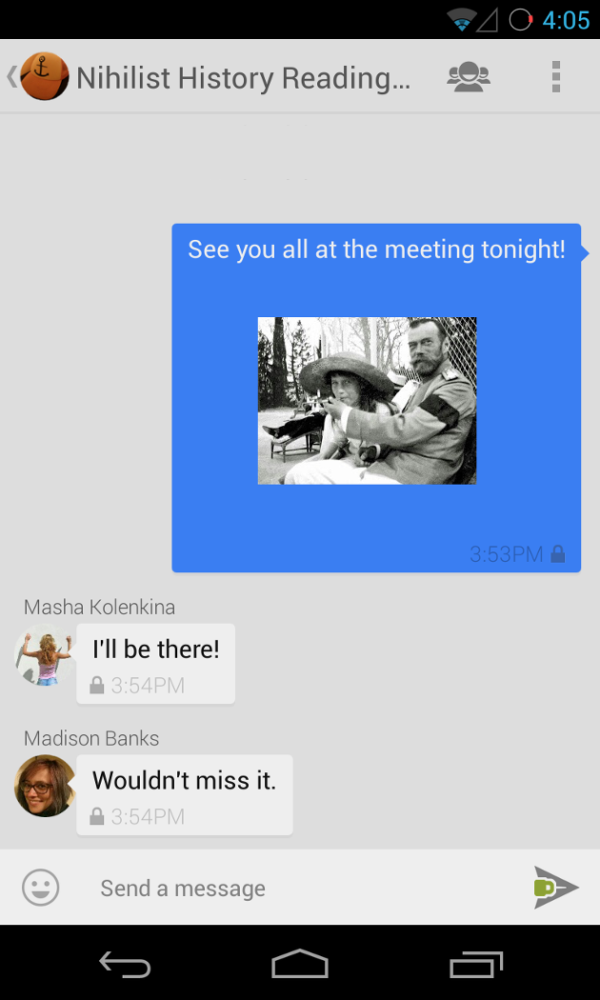

One of the major features we introduced in the TextSecure v2 release was private group chat. We believe that group chat is an important feature for encrypted communications projects, so we wanted to try to summarize some of the existing work in this area, as well as how TextSecure’s group chat protocol functions.
Ideal Properties
For regular two-party conversations, the TextSecure protocol is designed to provide advanced forward secrecy and deniability that functions smoothly in asynchronous messaging environments. For group conversations, we’d like to provide the same properties, and we’d naturally like the protocol to remain consistent with asynchronous messaging.
An additionally interesting property would be transcript consistency: the assurance that all members of a conversation are seeing the same message transcript, rather than messages which are selectively delivered or re-ordered to only some members, or messages which contain different plaintext for different members.
Basically, at minimum we want everything we have for two party conversations, with the possible addition of a property specific to group conversations.
The mpOTR Effort
Several years ago, Ian Goldberg et al. published Multi-party Off-the-Record Messaging, a paper describing a multi-party variant of the popular Off-the-Record messaging protocol. Since OTR is very popular for synchronous messaging, mpOTR has been at the center of discussions around secure group chat.
The mpOTR paper does not include all the details of a fully specified protocol, which has resulted in a fair amount of discussion and debate. Even as an abstract framework, however, the basic progression mpOTR describes is somewhat complex. There are three distinct phases, summarized as:
Setup Phase
Perform an exchange with each member to derive a session id.
Do a pairwise, deniable, authenticated key exchange based on long-term keys with each member.
Use the key exchange to exchange and prove possession of ephemeral (thus deniable) signature keys with each member.
Perform a separate “group key agreement,” authenticated by the signature keys.
Attest that everyone is seeing the same thing.
At this point, members are now ready to communicate. Depending on some of the unresolved details, the number of round-trip messages exchanged during the setup is somewhere between 4 * N to 12 * N , where N is the number of participants in the group (VANGUNDY).
Communication Phase
During the communication phase, members broadcast their messages to the group by encrypting them with the group key and signing the ciphertext with their ephemeral signing key pair (from step 3 in the Setup Phase).
This means that there is no forward secrecy during the communication phase, which is a striking departure from two-party OTR.
Shutdown Phase
If any existing chat participant wishes to leave the group chat, or if any new chat participant wishes to join the group chat, the session is shut down and starts over again in the Setup Phase.
The shutdown phase consists of the following steps:
All members agree that there are no more messages in transit.
All members calculate the hash of all messages they authored during the session, sorted in lexicographical order, and send those to all other members.
All members receive the hash values of all messages authored by other members, and compare those to local values of what they originally received.
At this point, users are notified whether the transcript they saw was consistent with all members or not.
mpOTR Problems for TextSecure
As currently outlined, mpOTR has a few problems for an app like TextSecure:
Overhead. For an asynchronous environment, even 4 * N round-trip setup messages isn’t practical. In an asynchronous environment, clients need to be able to immediately transmit their message without depending on any interactivity from any of the recipients, so even a single round trip is too much.
Ephemeral Session Orientation. Several aspects of mpOTR assume that group chat sessions are relatively short-lived, which doesn’t map well to an asynchronous environment. An asynchronous chat “session” could be years long.
No In-Session Forward Secrecy. This is a primary feature of two-party OTR, so it’s surprising not to find it here.
Consistency Surprise. The transcript consistency mechanism in mpOTR offers a strange user experience, even in synchronous environments. Only at the very end of a session, at the moment the user is leaving the chat, are they notified whether the conversation was “consistent” or not. It’s not clear what a user would do with the knowledge that, after a potentially hours-long conversation, something someone said somewhere during that conversation was seen inconsistently.
Complexity. From an implementation perspective, the protocol has a lot of moving parts and potential race conditions that could be difficult to get correct in all cases.
The TextSecure Group Protocol
We wanted a zero-round-trip asynchronous-oriented protocol with low complexity. The nice thing about the existing two-party TextSecure protocol is that, when treated as a platform, it provides a simple fire-and-forget messaging framework. Since setting up sessions is fully asynchronous, it’s easy to send a message to any destination at any time, whether you have an existing session or not.
Given the ease with which TextSecure can send encrypted pairwise messages with forward secrecy and deniability, we decided to implement group messaging by employing pairwise messaging. When sending a message to a group, we simply deliver a pairwise encrypted message to each member of the group.
While certainly simple, it’s not without costs. Instead of delivering 1 message, a client needs to deliver N messages. The server is already delivering N messages, so the efficiency impact is only on the sending side of a message’s delivery path.
Unencrypted messaging would look like this:

Compared to increased overhead on the sending path for encrypted messaging:

For short text messages, the impact is pretty minimal in today’s world, even for large groups. However, there’s an optimization we can make for longer messages and media. The sending client generates an ephemeral symmetric key K, encrypts the message with K (C = EK(P)), and then transmits a single copy of the ciphertext (C) along with the pairwise encryptions of the plaintext hash and the small key K:

An even further optimization is if clients generate and transmit an ephemeral signing key pair along with K. This allows the clients to use K for several messages over a defined period by hash-ratcheting K and including a signature in the transmitted ciphertext. This would reduce transmission overhead for larger groups communicating rapidly, but we don’t yet provide that optimization. For those messages, the transmission overhead would come all the way back around to the original picture:
We believe these optimizations can minimize the overhead of pairwise group messages to acceptable levels, while providing full forward secrecy, deniability, and an asynchronous orientation.
Distributed Group Management
One nice advantage of pairwise group messaging is that it helps provide the ability to push group management into the clients themselves. The server doesn’t need to know about the concept of a “group,” which means it doesn’t need to store group metadata.
Instead, TextSecure clients create, update, join, and leave groups by sending pairwise messages to the participants in the exact same way that group conversation messages are delivered. It’s just a few extra optional bits on the protobuf.
TextSecure and Transcript Consistency
At the protocol level, we believe that it is possible to provide transcript consistency while preserving an asynchronous orientation. Our initial plan has been to have a message sender include the truncated hash of the (sender, plaintext, counter) tuple for the last messages received by the sender.
This allows each client to build a graph of message parents and children. One could imagine visualizing this like an old-school email client visualizes conversation threads, which would make transcript inconsistencies and “reply intent” clear. That way if Bob sends a message to everyone that says “Who wants to kill the president?” except Alice, to whom Bob instead sends “Who wants to get some ice cream?,” when Alice responds “I do, how about this afternoon!” – it’d be clear to everyone in the conversation that Alice is responding to something they didn’t see.
Unfortunately, that type of “threaded” UI isn’t really possible or desirable on mobile devices, and even desktop communication apps are moving away from those types of threaded views. We want TextSecure conversations to remain “linearized,” so the way to display transcript consistency for untrusted groups like these remains an open UI/UX question for us. We have a few different options that we’re currently exploring to make these connections more visible while maintaining a simple UI, and we’ll write more about that process later.
The Experience
The result of all this is a pretty straightforward user experience. Anyone can create a group, name it, give it an avatar icon, add members, and then everyone can chat together with a normal asynchronous experience.

– Moxie Marlinspike, 5 May, 2014